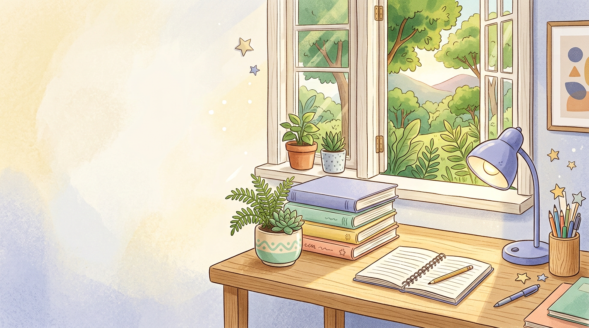

☁
•ᴗ•
happy browsing!
✦ FEITO PARA QUEM QUER APRENDER
O seu cantinho de estudos para aprender, praticar e descobrir coisas novas, no seu ritmo.

3 matériaspara explorar
12 anos e sériesdo fundamental ao médio
Seu ritmosem pressa, sem pressão
Feito para vocêestude quando quiser
SEU PRÓXIMO DESAFIO
Escolha uma matéria e comece por onde quiser.
UM PASSO DE CADA VEZ
Pequenas ferramentas para deixar o estudo mais leve.
Reserve um tempinho só para você.
Ideias e lembretes para depois.
Salvo neste navegador ♡
Cada resposta certa é uma conquista.
questões diferentes acertadas
MELHOR JUNTOS
Personagens fictícios criados com ajuda de IA para deixar a jornada mais divertida.
HORA DO DESAFIO
Selecione uma matéria e um ano para começar o quiz.
Escolha uma alternativa em cada questão. Você pode tentar novamente!
ENCONTRE UM ASSUNTO
Pesquise questões e conteúdos disponíveis nesta área.
Experimente pesquisar uma matéria, palavra ou ano.
CONHEÇA A TURMA
Estes são personagens fictícios criados com ajuda de IA. Eles não são pessoas reais nem contribuidores do projeto.
Personagem indiano apaixonado por desafios de lógica e uma boa xícara de chai.
Adora fazer perguntas, explorar a natureza e colecionar curiosidades.
Fã de palavras, histórias e pausas estratégicas para desenhar.
Acredita que toda tentativa é uma nova maneira de aprender.
ESCOLHA SUA VIBE
Um universo, várias energias. Seu tema fica salvo neste navegador.
✦ SUA COLEÇÃO ONLINE
Para jogar, estudar e descobrir coisas novas.
Escolha seu próximo destino e divirta-se!
✦ ENCONTRE SEU FAVORITO
Tem um pouquinho de tudo por aqui.
Nenhum link encontrado. Tente outra busca ♡